NT第十一課 第88-94步 請過來幫助我們 - 到耶路撒冷去
課程簡介：本課涵蓋基礎聖經內容，幫助學習者理解歷史或教義。
課程內容
前言
介紹課程的核心概念，請記錄筆記。
第十一課: 第88-94 步
第八十八步 請過來幫助我們！
動作：走到希臘，雙手從左下方向右上方收回走到希臘（代表馬其頓人在那邊的召喚），面向亞西亞，雙手掌心向上，向前伸直放在左下方，然後向右上方收起，像是在叫人過來。
經文：
l 徒 16:7-9 到了每西亞的邊界，他們想要往庇推尼去，耶穌的靈卻不許。8 他們就越過每西亞，下到特羅亞去。9 在夜間有異象現與保羅。有一個馬其頓人站著求他說：“請你過到馬其頓來幫助我們。”
問題：
根據徒 16:7-9，當保羅等人想要往庇推尼去，聖靈怎麼做？保羅看見什麼異象？那人對他說什麼？
解釋：
在這次旅程中，保羅和西拉不單回到在上一次旅程中建立的教會，堅固眾教會的信心，他們也繼續前往新的地點和城市傳福音。他們想到一些省份傳福音（包括亞西亞，當中有大城以弗所），但聖靈不許他們。我們不知道聖靈為什麼不許他們去，也許當時不是最適合的時機。保羅是在下一次旅程才來到以弗所，在那裏建立穩健的教會。
保羅和西拉來到一個岸邊的城市特羅亞。神在這裏給保羅一個異象：一個馬其頓人懇求保羅到他們那裏，幫助他們。保羅知道這是神的呼召，他們立即順服回應，啟程前往希臘（馬其頓位於希臘北部）。
默想：
你有沒有懷疑過神的帶領？祂有沒有阻止你做一件你很想做的工作，或者當你祈禱告訴神你想到某處地方，祂卻不許你去？不要灰心失望，請謹記下面的幾件事情：
1. 神每次對你說“不”，背後都有一樣“好東西”要給你。如果神關了一道門，那就是說祂要你做別的事情。假如你只忙著做自己想做的事情，你又怎樣做神給你的對你最好的事情呢？假如你的手裏已拿著很多東西，神又怎樣將最好的東西給你呢？
2. 也許神不是說“不”，而是說“未到時候”。也許將來祂會帶你向這個方向走，但現在祂有別的事情要你做。也許是情況不合適，也許是因為你還沒有預備好。無論是什麼原因，我們必須相信一切事情只有神最清楚知道，我們必須順服祂的帶領（請記住，要確定是神在帶領你，不是你自己的欲望與渴求在牽引著你）。
3. 當神說“不”時，撒但會令你懷疑神的智慧（“神真的明白你嗎？祂真的瞭解你的情況嗎？”），也會令你懷疑神的良善（“神沒有將最好的東西給你！”）。
請記住，神不會領你走錯路，你必須滿足於神現在要你做的事情，並將你的未來交在祂的手中。
第八十九步 希臘
動作：指著希臘仍站在希臘，並指著這個地方說“希臘”。
經文：
l 徒 16:12 從那裏來到腓立比，就是馬其頓這一方的頭一個城，也是羅馬的駐防城。我們在這城裏住了幾天。
解釋：
下面列出了保羅和西拉在希臘到過的地方，以及在這些地方發生過的事情：
哥林多古城的人一向事奉司愛女神，城裏有司愛女神廟；這個城市臭名昭著，城裏的人道德敗壞，行為風俗有悖常理。由於它的名聲不好，希臘人用“哥林多化”一詞表示行淫亂。保羅時代的哥林多人都是羅馬上流社會的特權階級。他們以自己是智者、老練的人而自豪；他們對希臘哲學極為熟悉，並且在羅馬社會很吃得開。
保羅留在哥林多，服事當地教會最少18 個月（甚至兩年）。他講道勸勉他們遠離惡行，歸向神。哥林多教會有很多問題（有一些是由於他們的背景），保羅需要認真對付，因此他最少寫了兩封書信給他們（哥林多前、後書）。
默想：
保羅留在哥林多城，絕不是因為喜歡那裏道德敗壞，到處充滿罪惡，而是因為神在這個邪惡的地方“有許多的百姓”（徒18:10）。祂吩咐保羅繼續宣講神的話，不要閉口⎯⎯ 神的話最終會發生果效。
我們會覺得，向“高雅”的人——背景好或家庭環境好的人傳福音會容易些。但那些看來比較“粗俗”的人，我們又如何對待呢？就算對那些沉浸在罪惡之中的人，或者無神論者，我們都不要猶豫不說神的話。神已預備了他們的心，祂只要你作祂的代表，將生命帶給他們。“不要怕，只管講，不要閉口”（徒18: 9）⎯⎯ 這也是神今天對你說的話！不要害怕對妓女、歹徒、流氓、迫害你的人傳福音；神會與你同在！
哥林多人以為自己是智者，是老練的人。但保羅告訴他們，人的智慧在神看來是愚拙。
屬靈的人能看透萬事（林前2:15）。神賜的智慧不同人的智慧；神所賜的智慧不會叫人變得老練精明，但能夠讓人領會和應用神的真理（參看林前1:18-2:16）。
保羅在哥林多的期間，寫了帖撒羅尼迦前、後書
第九十步 回到安提阿
動作：指著安提阿，然後走過去
經文：
徒 18:22 在該撒利亞下了船，就上耶路撒冷去問教會安，隨後下安提阿去。
解釋：
保羅最後來到耶路撒冷，在那裏作短暫停留之後，就回到安提阿。他這次回安提阿，很可能是要向當地的教會彙報神借他們所做的事情，以及分享神如何為外邦人開了通道的門。上一次旅程的焦點是小亞細亞；這一次旅程的焦點是希臘。他在安提阿教會逗留的一段日子，肯定能激勵當地的弟兄姊妹。這是聖經所載保羅最後一次到安提阿。
第九十一步 第三次宣教旅程
動作：豎起三隻手指
經文：
l 徒 18:23 住了些日子，又離開那裏，挨次經過加拉太和弗呂家地方，堅固眾門徒。
解釋：
這是保羅最後一次有記錄的宣教旅程，一共花了大約四年的時間。這次旅程有三個重要的部分：
一. 保羅探訪和堅固眾教會（徒18:23）
在第三次的旅程中，保羅沒有與巴拿巴或西拉同行，但他要去的地方，很多都是從前去過的。他要服事那些他親自帶領信主的人；他此行的目的是要堅固眾教會。保羅喜歡前往新的地方領人歸主，但他不會忘記那些已經信主的人需要堅固。他時刻都記得交棒的重要性。
二. 亞波羅開展事工（徒18:24-28）
亞波羅是來自埃及亞力山太的猶太人。他在那裏出生、受教育，口才很好。他很熟悉舊約聖經，但他只曉得約翰的洗禮。他認識真理，但不是全部的真理。他從施洗約翰知道世人需要悔改，也知道彌賽亞要來。但他不知道耶穌已為人類釘死在十字架上，並已復活，也不知道聖靈已降臨，教會已誕生。百基拉和亞居拉聽見他講道，便“將神的道給他講解更加詳細”
（徒 18:26）。他們的行動給我們極大的啟發：當我們聽見別人的講道有不足之處或不夠完全，我們應該怎麼做？他們沒有當眾責備他，反而接他回家，將神的道給他詳細講解。他們沒有在人前嘲笑他、指責他或批評他。
他們知道需要溫柔地勸導他，而且最好是在私下裏進行。
對於要接受教導，亞波羅的反應也很有啟發性。他雖然身為講道者，卻願意向普通信徒學習，謙卑地聽他們的教導。不但如此，當他知道自己仍有很多事情需要學習，他便走到哥林多，花時間預備自己（徒18:27, 19:1），因為他知道保羅曾花了一段頗長的時間教導當地的會眾。在哥林多的期間，亞波羅一邊學習，一邊幫助當地的門徒。
他在哥林多教會愈來愈受歡迎，因此身邊開始形成一個小圈子（林前1:12）。但他不想製造分裂，於是就離開了哥林多，不願再回去（林前16:12）。
三. 保羅在以弗所的事工（徒19:1-41）
這一點我們會在下一步討論。
默想：
我們需要學習亞居拉和百基拉。當你要糾正同工的錯誤或勸導他時，你會否用責備的口吻？你有沒有當眾斥責他，或者公開挑戰他的教導，令他難堪？還是你在私下裏溫柔地勸導他、糾正他的錯誤？對於他的無知，你是溫柔對待還是嚴厲對待？
我們也需要學習亞波羅。他謙卑地聽從會眾的教導。你是否願意接受會眾的教導？
你的會眾會不會因為覺得你高傲、對他們嚴厲，就不敢對你提出意見，不敢糾正你的錯誤？你是溫柔對待你的羊群，願意聆聽他們的意見，還是像暴君一樣任意而行？神要你聆聽你的羊群的意見，因為有時祂會借著羊群教導你。你要做一個願意接受批評的老師。
第九十二步 亞西亞
動作：指著亞西亞，然後走過去
經文：
l 徒 19:1 亞波羅在哥林多的時候，保羅經過了上邊一帶地方，就來到以弗所；在那裏遇見幾個門徒。
解釋：
保羅再次經過小亞細亞。他在內陸花了一些時間，但他主要的目的地是以弗所。
為什麼要選以弗所？因為它是亞西亞省的第一大城，工商貿易發展蓬勃，人口更接近三十萬。它影響著整個亞西亞省。不過，以弗所卻盛行巫術和法術；迷信、拜鬼、占星和各種各樣的秘術極為流行。城裏到處都是祭司、術士、巫師和各類的騙子。城中還有生殖女神亞底米的廟宇；這座廟宇長140 公尺、寬70 公尺，有127 條白色大理石柱，每條高21 公尺；裏面有一個多乳的女神像，據說是從天上掉下來的。廟宇周圍有很多廟妓。
以弗所的人正行在極大的黑暗中。城裏的人對福音極為抗拒，但在那裏傳福音的機會卻也很大。難怪保羅在以弗所寫信給信徒時會說：“但我要仍舊住在以弗所，直等到五旬節，因為有寬大又有功效的門為我開了，並且反對的人也多”（林前16:8-9）。
事實上，保羅對以弗所有極大的影響，可以說，他在其他地方的影響遠遠不及在以弗所（參看徒19:18-20）。
神的話從以弗所傳遍整個亞西亞省，以致“一切住在亞西亞的，無論是猶太人，是希利尼人，都聽見主的道”（徒19:10），甚至保羅的敵人也承認這個事實（徒19:26）。
但成功也會帶來更多、更大的逆境。沒多久，那些從前因著城中的人迷信而得利的人開始警覺，他們看見保羅的工作正侵害他們的利益。因此，他們策劃了一次大規模的動亂。這次的動亂意味著保羅要結束在以弗所的工作。在發生動亂後不久，他就離開了以弗所。
這時，保羅心裏另有主意：他要經過希臘，再回到耶路撒冷，最後到羅馬帝國的中心―― 羅馬城（徒19:21）。
保羅寫了哥林多前、後書
默想：
保羅問施洗約翰的門徒有沒有受聖靈，聖靈是否在他們的生命裏。你的生命裏有沒有聖靈？我所指的不是恩賜，我所指的是在你的生命裏，有沒有顯明祂的同在、祂的作為、祂的更新、祂的喜樂、祂的平安和祂的屬性？
假如有人反對我們所傳的福音，我們有時可能會很快地作出推斷，以為神要我們到別的地方去。但當保羅看見那敞開的大門和反對他的人，他的反應是“我要仍舊住在以弗所，直等到五旬節”（林前16:8）。我們必須知道，假如那是一道又大又有果效的事工之門，一定會有反對的聲音攔阻我們、對抗我們。我們應該預料到會出現這種情況。但神也從中讓我們有機會看見祂的能力；縱有攔阻反對，祂會給我們能力，借
我們完成祂的事工。
在保羅的時代，以弗所經歷了神的大作為。但今天，那裏已沒有人居住；附近只有一條穆斯林小村落，沒有基督徒，沒有教會。請注意神在啟示錄2 章4-7 節對以弗所教會的勸告。神說假如他們不悔改，祂會怎麼做（啟2:5）？這對你的教會有何提醒？
第九十三步 希臘
動作：指著希臘，然後走過去
經文：
l 徒 20:1-2 亂定之後，保羅請門徒來，勸勉他們，就辭別起行，往馬其頓去。2 走遍了那一帶地方，用許多話勸勉門徒，然後來到希臘。
解釋：
保羅從以弗所來到希臘，在哥林多逗留了三個月。期間他寫了羅馬書。
保羅寫了羅馬書
當他正想乘船前往耶路撒冷時，他發現了猶太人圖謀要殺他。於是他決定返回馬其頓，從陸路往耶路撒冷。
第九十四步 到耶路撒冷去
動作：指著耶路撒冷，然後走過去
經文：
l 徒 20:17、22-24 保羅從米利都打發人往以弗所去，請教會的長老來…… 22“現在我往耶路撒冷去，心甚迫切，不知道在那裏要遇見什麼事；23 但知道聖靈在各城裏向我指證，說有捆鎖與患難等待我。24 我卻不以性命為念，也不看為寶貴，只要行完我的路程，成就我從主耶穌所領受的職事，證明神恩惠的福音。”
問題：
根據徒 20:17、22-24，保羅對誰說話？他為什麼要到耶路撒冷？聖靈預告他在那裏會遇見什麼？保羅對自己的性命抱什麼態度？保羅的目標是什麼？
解釋：
保羅從特羅亞開始回程，在那裏，他治好了一個從窗臺上掉下來摔死的少年人（徒 20:1-12）。當他來到米利都，就打發人請以弗所教會的長老到他那裏，給他們臨別贈言（徒20:17-35）。
保羅不得不去耶路撒冷。雖然聖靈在各城向他指證，讓他知道什麼在等著他，他仍然沒有退縮。到了該撒利亞，他住在傳福音的腓利家裏。腓利是七個執事之一（徒 6:5），也是傳福音給埃提阿伯太監的人（徒8:26-40），他後來到了該撒利亞傳福音（徒8:4-8）；大約二十年後，當保羅到達該撒利亞時，腓利仍然住在那裏，還生了四個會說預言的女兒。
在該撒利亞，先知亞迦布用先知說預言的方式，也就是以象徵性的行動說了一個預言；他拿保羅的腰帶捆著自己的手腳，預言保羅在耶路撒冷會這樣被捆綁（徒 21:10-11）。（先知亞迦布曾在使徒行傳11 章27-28 節預言耶路撒冷會有饑荒。）
朋友、同工們的勸阻和眼淚沒有令保羅卻步（徒21:12-13）。他要前去，是因為他對神的愛，以及渴望順服祂的帶領。
默想：
屬靈長者或導師的意見是有幫助的，是有建設性的，能防止我們做一些愚蠢、魯莽和未經周詳計畫的事情。導師也能幫助我們分析問題，找出一些我們沒有注意到的事情。在這次事件中，保羅的朋友、同工們勸他不要到耶路撒冷。這不是因為聖靈禁止保羅前往，而是因為他們不想失去與保羅的交通和他的帶領。雖然保羅對他們的勸阻很感動，但他知道這是神叫他去的。當中的矛盾不是神的旨意，神的旨意是要他去。
問題是，保羅有很多愛他的同工、朋友，他們不想他受苦。然而他卻必須走，因為神催迫他。這不是保羅是否有智慧、是否審慎的問題，而是他是否順服神的問題。
以弗所教會將要面對兩種危機：外面有兇暴的豺狼要進來，他們不愛惜羊群；裏面也有人要製造分裂，引誘門徒跟從他們。為神牧養群羊的人需要警醒，提防這兩方面的攻擊。要對付這些問題，你必須作個好牧人——要毫不保留地把神的旨意完完全全地教導你牧羊的羊（徒20:27），要努力將棒完全交給他們，要愛他們、栽培他們，要好好培訓同工。不要貪財，因為貪財等於拜偶像。不要因財失義，不要占別人的便宜。最後，要在聖潔、敬虔和對弟兄姊妹的愛心上，作眾人的榜樣。

信息：保羅的臨別贈言（徒20:28）
引言
假如你是最後一次探訪你的教會，你會跟他們講什麼？假如你只有很少的時間，你會對他們說什麼？你會不會問他們菜多少錢一斤？你會不會跟他們說一些瑣事？不會！你一定會跟他們講最重要的事情。
這就是保羅在使徒行傳 20 章跟以弗所的長老們話別的情況。他有三年的時間跟他們在一起，在以弗所建立和培育教會。到了這個時候，他要到耶路撒冷，很可能會死在那裏；也許這次就是他們最後見面的機會。保羅跟他們講什麼？請看28 節：
壹. 當為自己謹慎
這是十分重要的。很多當領袖的人為主工作了一兩年便退下來。為什麼呢？有時是因為他們忽略了自己靈性的健康；有時是因為他們把所有時間和精力都用在事奉教會的工作上，很少注重培養和建立自己的靈命。這就顯出他們的不智，缺乏遠見。你必須知道，你所事奉的教會是否健康，關鍵就在你的靈命是否健
康。
領袖所走的方向，就是教會的方向。撒但會首先猛烈攻擊教會的領袖。因此，你必須努力保守自己，時刻保持警醒，一方面防備外來的攻擊，一方面保守你的內心，避免鬆懈。務要謹慎自守。
貳. 也為全群謹慎
為自己謹慎之餘，也要為群羊謹慎。聖靈既使你成為全體的監督，你就要保守他們免受外來的攻擊，也要小心提防他們當中的軟弱和過犯。但不要離棄他們；不要輕言放棄；不要糊塗大意；不要忽略羊群。
三. （要）牧養神的教會
你不單要為群羊謹慎，也要牧養他們。你要培育他們。你要溫柔對待他們，花時間與他們一起，認識他們做事的方法和生活的方式。你要幫助他們，耐心對待他們。在有需要的時候，你要教訓他們。你要餵養他們，教他們學習自己喂養自己。你要作他們的牧者，因為他們是耶穌基督用祂的血買來的。你能計算他們的價值嗎？神的羊有多貴重？他們是無價之寶！神既然派你作這些寶貴之物的牧者，你就不能掉以輕心！
第2節
結合聖經經文加深理解。
88．請過來幫助我們！ “Please
come to help us!” 88 . Xin hãy đến
giúp đỡ chúng
tôi!
|
88．請過來幫助我們！ |
“Please come to help us!” |
Go to Greek, two hands get from left to right side |
88 . Xin hãy đến giúp đỡ chúng tôi! |
Giữ hai tay nhau trước ngực và kéo mạnh phía bên kia |
徒 Act Công Vụ các sứ đồ 16:7-9 |
★nt_88_ “Xin hãy đến Macedonia và giúp đỡ chúng tôi” (Cv 16:8-9) 「請你過到馬其頓來幫助我們。」(徒16:8-9)
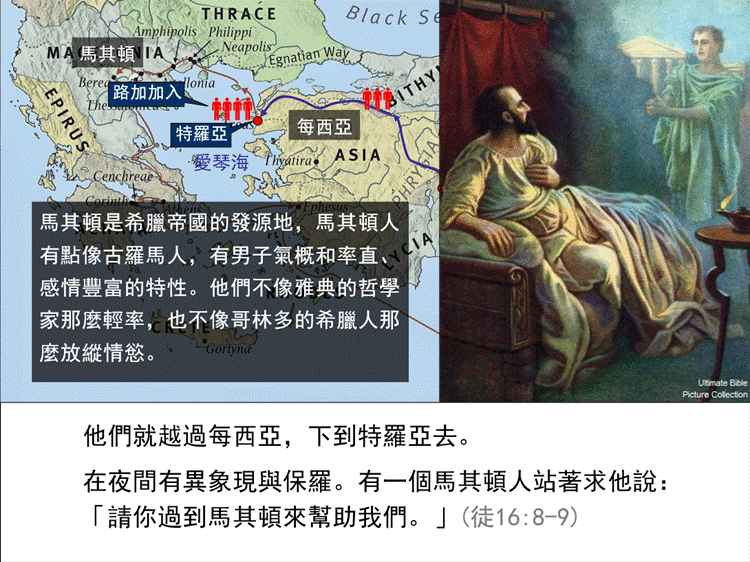
nt_88_使徒行傳第十六章1-10節 福音向西傳從這裡開始
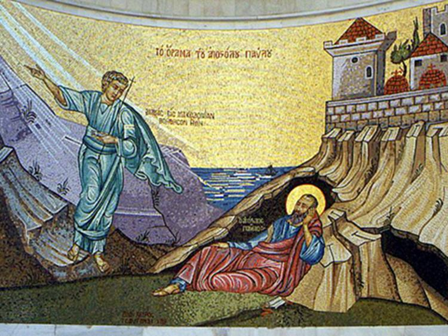
福音向西傳從這裡開始 ◎黃濠光牧師
「在夜間有異象現與保羅。有一個馬其頓人站著求他說：『請你過到馬其頓來幫助我們。』」（9）
★nt_88_Hãy qua xứ Ma-xê-đoan, mà cứu giúp chúng tôi. (Công Vụ 16: 6-15) “到馬其頓來幫助我們吧。
https://www.facebook.com/photo.php?fbid=1465559820128096&id=560365543980866&set=a.561212400562847
9 保羅在夜間看見異象。一個馬其頓人站在他面前，懇求他說：“到馬其頓來幫助我們吧。”
★nt_88_Chúa phán với Phao-lô vượt xa và mang Tin lành của Ngài đến cho người Ma-xê-đoan 主对保罗说, 把他的好消息带给马其顿人
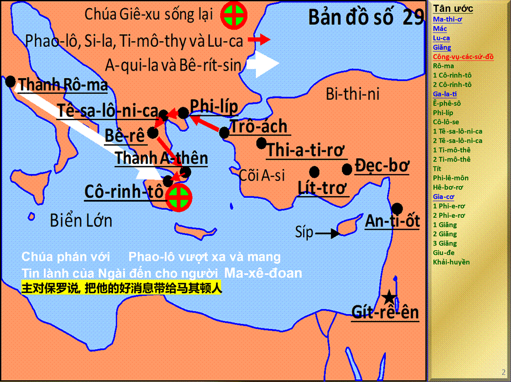
89．希臘 Greek 89 . Hy Lạp (Gờ-rét)
|
89．希臘 |
Greek |
Point to Greek, go there |
89 . Hy Lạp (Gờ-rét) |
Tới Hy Lạp và rút tay từ phía dưới bên trái lên phía trên bên phải |
徒 Act Công Vụ các sứ đồ 16:12 |
希臘 Greek
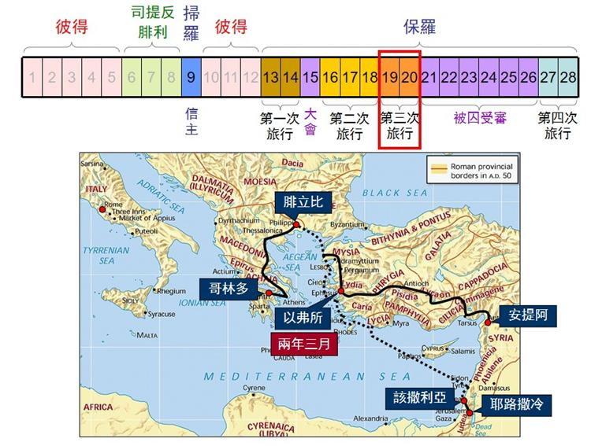
https://www.cypressyun.com/canaan-articles/gate-of-faith/xyzm-zbbldsclxxj-20231117180439/
nt_89_登陸紀念碑上的馬賽克圖像，敘述保羅在特羅亞看見馬其頓呼聲的異象，並前進歐洲。
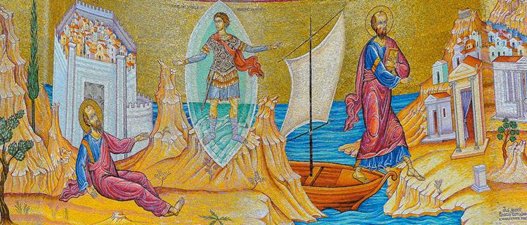
https://ct.org.tw/html/news/3-3.php?cat=47&article=1388844
★nt_89_Sứ đồ Phao-lô viết thư cho các hội thánh 使徒保羅寫信給各教會
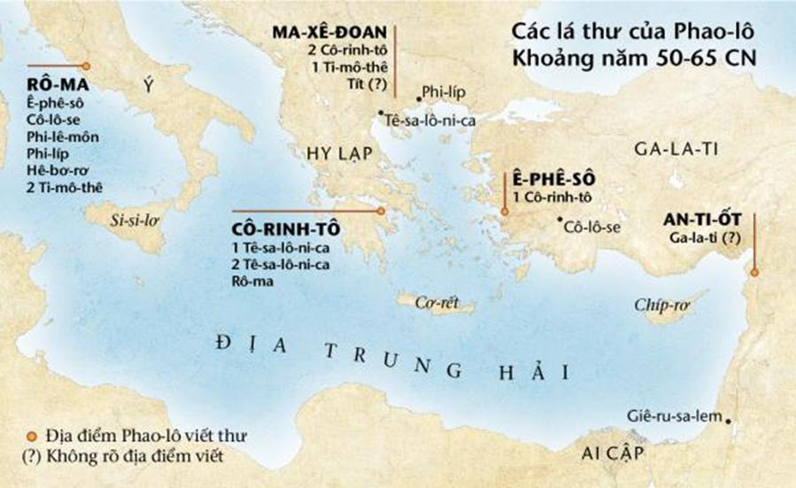
90．回到安提阿 Back to Antioch 90 . Trở về An-ti-ốt
|
90．回到安提阿 |
Back to Antioch |
Point to Antioch, go there |
90 . Trở về An-ti-ốt |
Hướng tới Hy Lạp |
徒 Act Công Vụ các sứ đồ 18:22 |
nt_90_敘利亞的安提阿 保羅三次外出，每一次都由此出去，回來也一定回到這裡繼續過教會生活
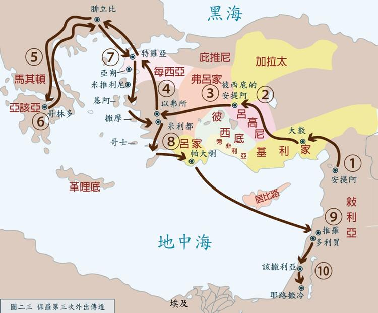
https://www.luke54.org/view/1060/11757.html?r=2
在行傳第六章，當初期教會生活中因為飯食服事有些問題，教會中選出七位有好見證的，且被聖靈充滿的服事飯食者，其中有一位是當地安提阿人尼哥拉（徒6:1~5）。
91．第三次宣教旅程 Third Missionary Journey 91 . Hành trình truyền giáo thứ ba
|
91．第三次宣教旅程 |
Third Missionary Journey |
Rise up three fingers |
91 . Hành trình truyền giáo thứ ba |
Chỉ vào Antioch và đi bộ qua |
徒 Act Công Vụ các sứ đồ 18:23 徒 Act Công Vụ các sứ đồ 18:24-28 徒 Act Công Vụ các sứ đồ 19:1-41 |
第三次宣教旅程 (AD 52-57) Third Missionary Journey
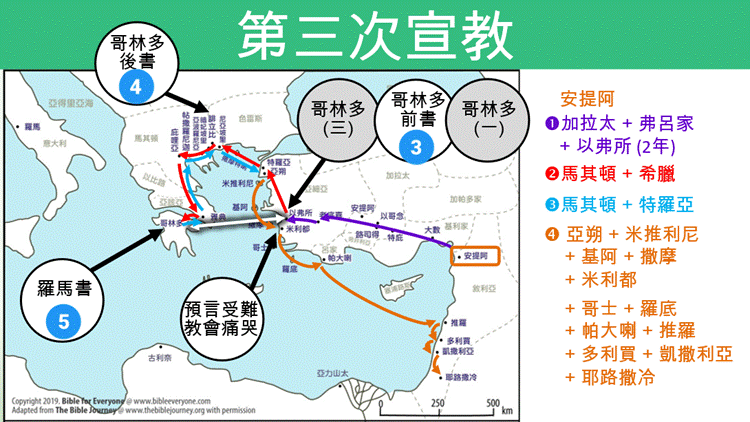
https://bibleeveryone.com/paul-trip3.php
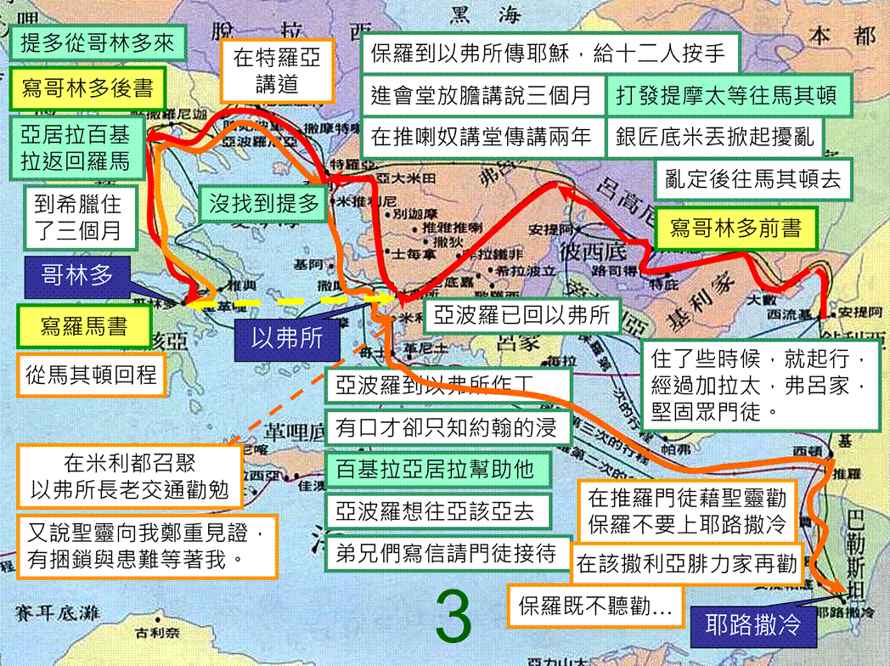
使徒行傳第十八章12-28節 開始第三次差傳旅程
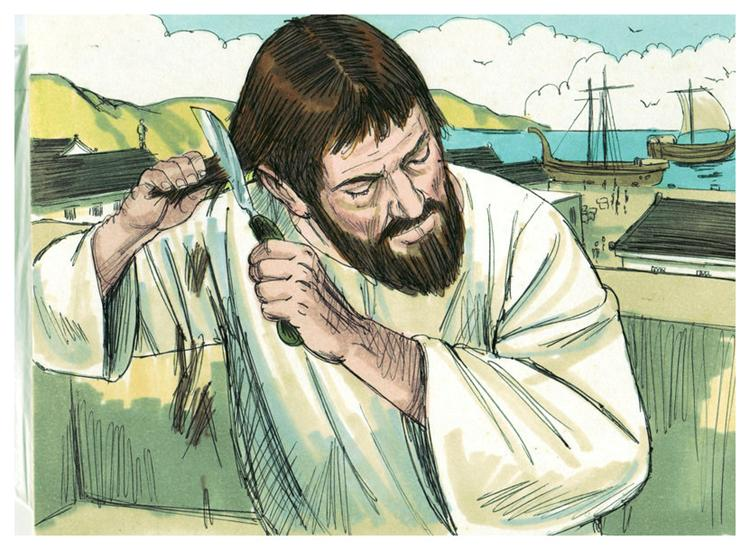
開始第三次差傳旅程 ◎黃濠光牧師
「他在會堂裡放膽講道；百基拉，亞居拉聽見，就接他來，將神的道給他講解更加詳細。」（26）
★nt_91_Hành trình truyền giáo thứ ba 第三次宣教旅程 Third Missionary Journey
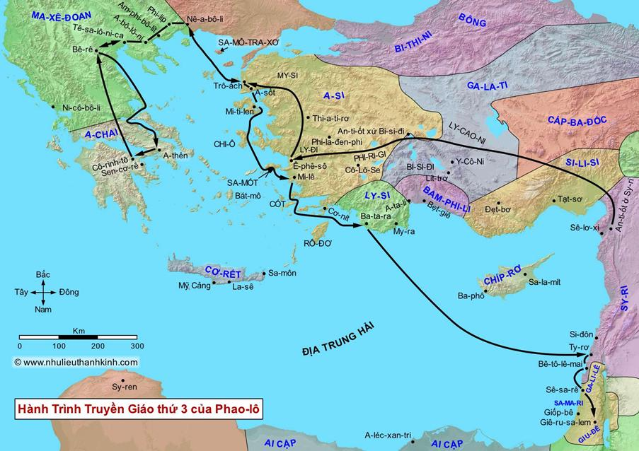
http://nhulieuthanhkinh.com/index.php/ban-do-kinh-thanh/ban-do-thoi-tan-uoc?view=defaultTabs
92．亞西亞 Asia 92 . A-si
|
92．亞西亞 |
Asia |
Point to Asia, go there |
91 . Hành trình truyền giáo thứ ba |
Giơ ba ngón tay lên |
徒 Act Công Vụ các sứ đồ 19:1 |
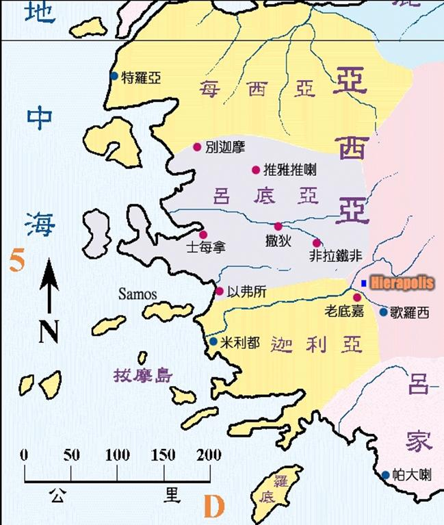
nt_92_使徒行傳第十九章1-10節 兩年時間集中在以弗所
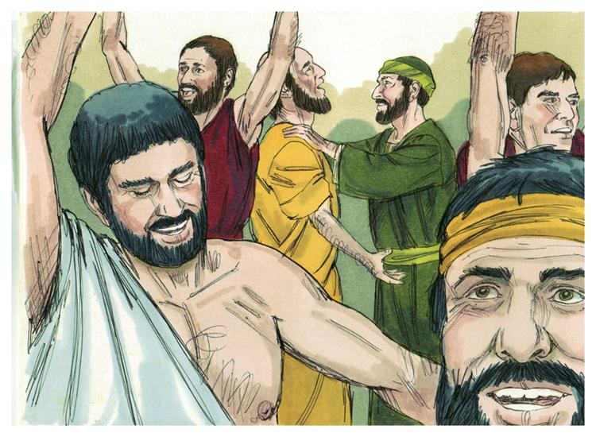
兩年時間集中在以弗所 ◎黃濠光牧師
「保羅按手在他們頭上，聖靈便降在他們身上，他們就說方言，又說預言（或作：又講道）。」（6）
nt_92_使徒行傳第十九章11-22節 靈力對峙
靈力對峙 ◎黃濠光牧師
「主的道大大興旺，而且得勝，就是這樣。」（20）
93．希臘 Greek 93 . Hy Lạp (Gờ-rét)
|
93．希臘 |
Greek |
Point to Greek, go there |
93 . Hy Lạp (Gờ-rét) |
Chỉ vào Châu Á và bước qua |
徒 Act Công Vụ các sứ đồ 20:1-2 |
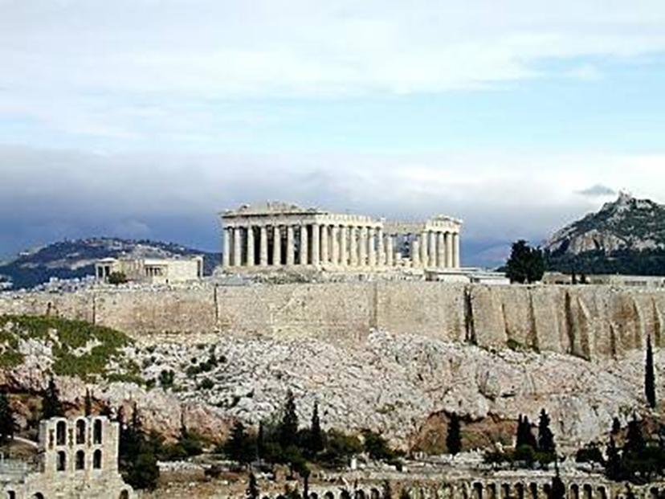
使徒行傳第十七章16-34節 跟哲學家傳福音的講章
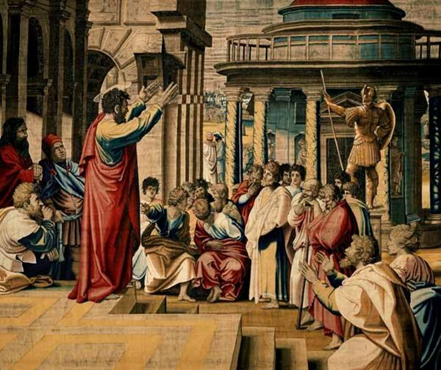
保羅在雅典的亞略巴古講道。
跟哲學家傳福音的講章 ◎黃濠光牧師
「我們生活、動作、存留，都在乎他。」（28）
使徒行傳第十九章23-41節 第三層屬靈爭戰
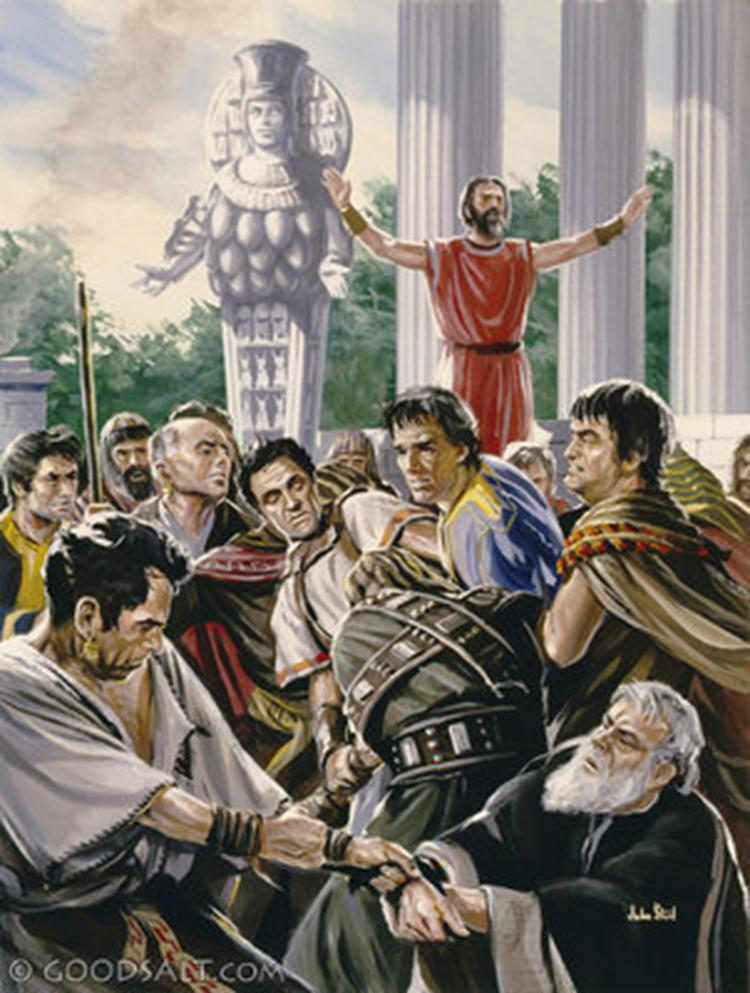
第三層屬靈爭戰 ◎黃濠光牧師
「那時，因為這道起的擾亂不小。」（23）
★nt_93_56. Phaolô lại Athên 56. 保羅返回雅典 1
{kind=link}
★nt_93_56. Phaolô lại Athên 56. 保羅返回雅典 2
{kind=link}
★nt_93_57. Phaolô tại Côrinhtô 57. 保羅在哥林多 1
{kind=link}
★nt_93_57. Phaolô tại Côrinhtô 57. 保羅在哥林多 2
{kind=link}
Tông Đồ Công VụChương:
★nt_93_58.Phaolo Tại Êphêsô 58.保羅在以弗所 1
{kind=link}
★nt_93_58.Phaolo Tại Êphêsô 58.保羅在以弗所 2
{kind=link}
94．到耶路撒冷去 To Jerusalem 94 . Đi tới Giê-ru-sa-lem
|
94．到耶路撒冷去 |
To Jerusalem |
Point to Jerusalem, go there |
94 . Đi tới Giê-ru-sa-lem |
Chỉ vào Hy Lạp và đi bộ qua |
徒 Act Công Vụ các sứ đồ 20:17、22-24 徒 Act Công Vụ các sứ đồ 20:28 |
使徒行傳第廿一章1-6節 保羅擇善固執
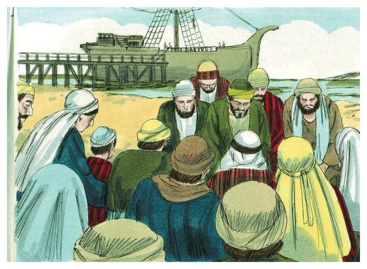
保羅擇善固執 ◎黃濠光牧師
「找著了門徒，就在那裡住了七天。他們被聖靈感動，對保羅說：『不要上耶路撒冷去。』」（4）
★nt_94_59. Phaolô trở lại Jêrusalem 59. 保羅回到耶路撒冷 1
{kind=link}
★nt_94_59. Phaolô trở lại Jêrusalem 59. 保羅回到耶路撒冷 2
{kind=link}
Tông Đồ Công Vụ
總結
總結本課的關鍵教導。
教學影片
觀看本課的教學影片，深入了解內容。
課後作業
作業1：閱讀與反思
閱讀相關經文，寫下200-300字反思。
作業2：經文記憶
背誦一節經文並分享其應用。